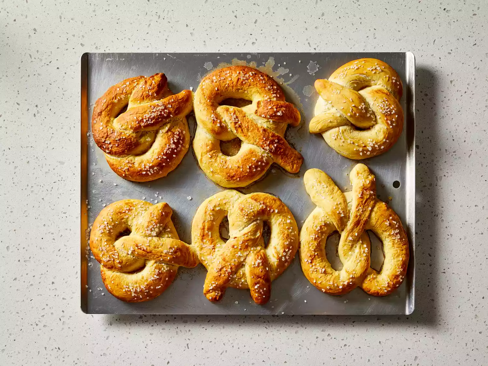

Bavarian Pretzels

Delicious and Easy to make!
Try this German pretzel recipe for traditional Bavarian pretzels. They're fun to make and go great with a mug of beer!
This recipe is wonderful and so easy to follow and then you eat a pretzel that tastes like you got them from a bakery in BavariaI would recommend this recipe to all. Delicious.
Ingredients
- 3 1/2 cups all-purpose flour, divided, or more as needed
- 1 tablespoon active dry yeast
- 1 teaspoon white sugar
- 1 1/3 cups water
- 2 tablespoons butter, softened
- 1/4 teaspoon salt
- 3 tablespoons baking soda
- 2 tablespoons butter, melted
- 1 tablespoon coarse sea salt, or to taste
Steps
- Gather all ingredients.
- Whisk 1 cup flour, yeast, and sugar together in a bowl. Stir in water and softened butter until well combined. Let stand until bubbles begin to form, about 15 minutes.
- Stir salt into yeast mixture, then gradually stir in 2 1/2 cups flour until dough can be picked up in a ball.
- Knead until smooth and elastic, about 8 minutes, adding more flour if needed.
- Divide dough into 6 pieces and let rest for a few minutes.
- Roll one piece into a 15-inch rope, then loop and twist rope into a pretzel shape. Place onto a baking sheet and form remaining pretzels. Cover and let rise for 15 minutes.
- Preheat the oven to 450 degrees F (220 degrees C). Grease a baking sheet.
- Bring 3 cups water to a boil in a pot. Stir in baking soda and remove from the heat.
- Dip pretzels into the water bath for about 45 seconds, flipping over about halfway through.
- Transfer soaked pretzels to the prepared baking sheet; brush with melted butter and sprinkle with salt.
- Bake in the preheated oven until golden brown, 8 to 10 minutes.